MStone Surfaces
Céramique MStone : une surface technique pour cuisine, salle de bains et murs
Le plan de travail en céramique MStone combine la robustesse d'une céramique cuite à très haute température et une palette de 13 décors soignés. Certifiée pour le contact alimentaire et stable au soleil, elle convient aussi bien à une cuisine qu'à une salle de bains. Partenaires de MStone Surfaces, nous la façonnons à Mafra.
Le plan de travail Céramique MStone
La céramique MStone est une surface technique issue de matières premières naturelles cuites à très haute température. Non poreuse, elle se passe de tout traitement et résiste à la chaleur, aux rayures et aux produits chimiques, sans craindre le soleil. Elle convient aux plans de travail, crédences, plans vasques et revêtements muraux, le 12 mm étant idéal en paroi.
Céramique MStone
- Lux (poli)
- Nat (mat)
- Soft (mat)
- Soft 3D (mat texturé)
- Épaisseurs 12 mm / 20 mm
- Sans traitement
- Non poreux
- Certifié
- Contact alimentaire
- Couleur stable
- Anti-UV
- Épaisseurs
- 12 / 20 mm
Finitions et formats
- Lux (poli)
- Nat (mat)
- Soft (mat)
- Soft 3D (mat texturé)
- 12 mm · 20 mm
Coloris Céramique MStone
13 coloris disponibles, à voir aussi en vrai dans notre usine de Mafra sur rendez-vous.
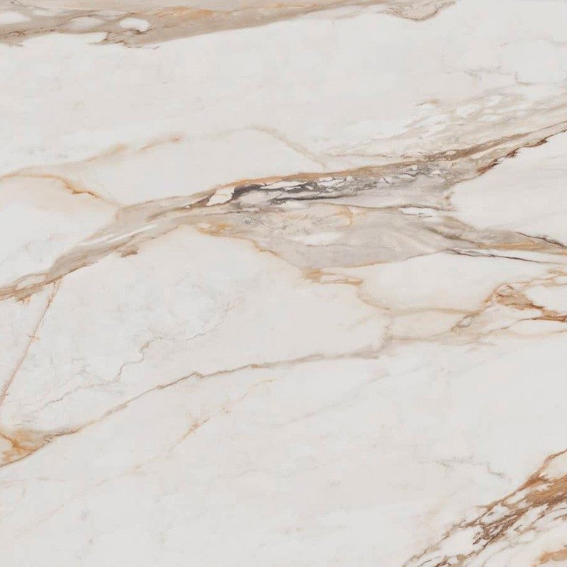
Antique OroLux (poli) · Nat (mat) · Soft (mat)Effet or vieilli à la chaleur patinée.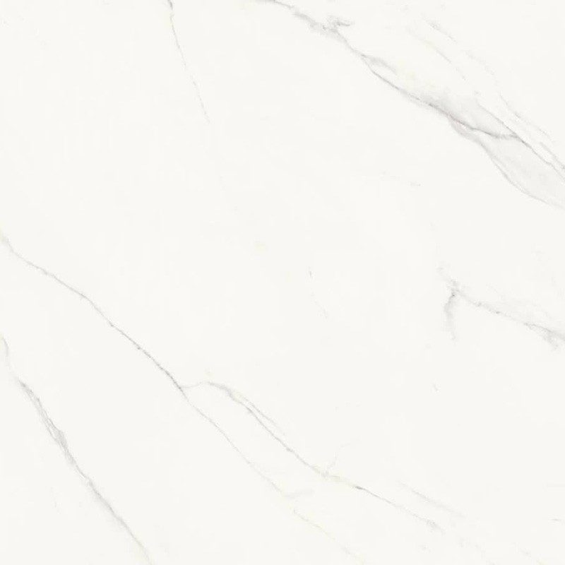
Calacatta CendreLux (poli) · Nat (mat) · Soft (mat)Effet marbre clair aux veines gris cendré.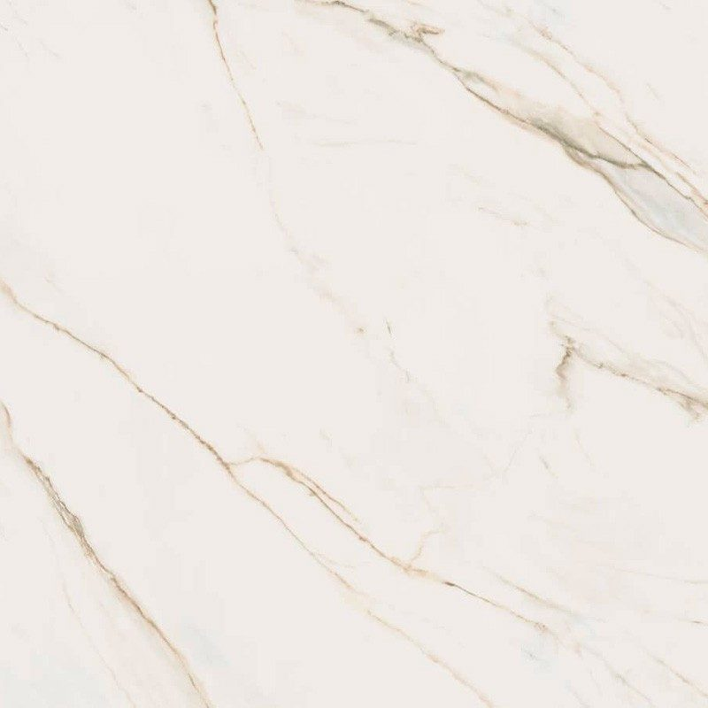
Calacatta GoldLux (poli) · Nat (mat) · Soft (mat)Blanc marbré aux veines dorées luxueuses.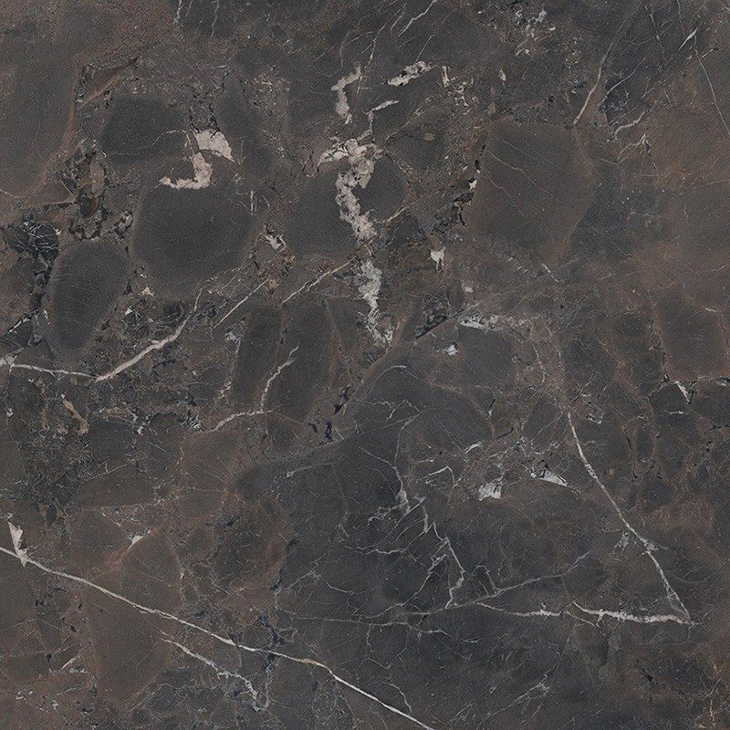
CosmosLux (poli) · Nat (mat) · Soft (mat)Gris foncé moucheté, style contemporain. Créma NaturalLux (poli) · Nat (mat) · Soft (mat)Crème naturel aux nuances beige douces.
Créma NaturalLux (poli) · Nat (mat) · Soft (mat)Crème naturel aux nuances beige douces.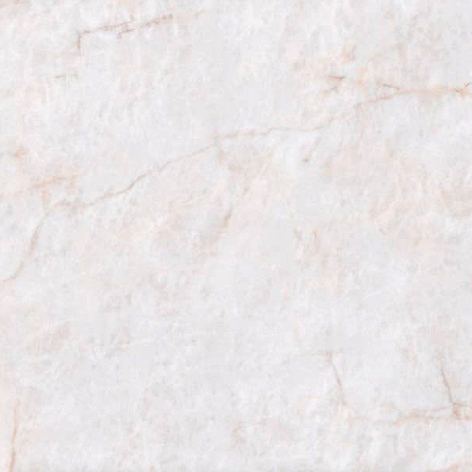
Cristalo ClairLux (poli) · Nat (mat) · Soft (mat)Blanc éclatant à l'esthétique épurée.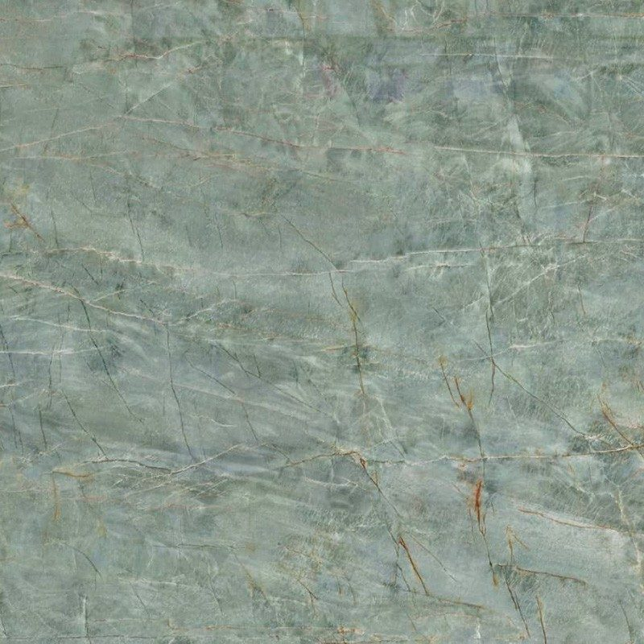
Emeraude GreenLux (poli) · Nat (mat) · Soft (mat)Vert profond audacieux aux veines claires.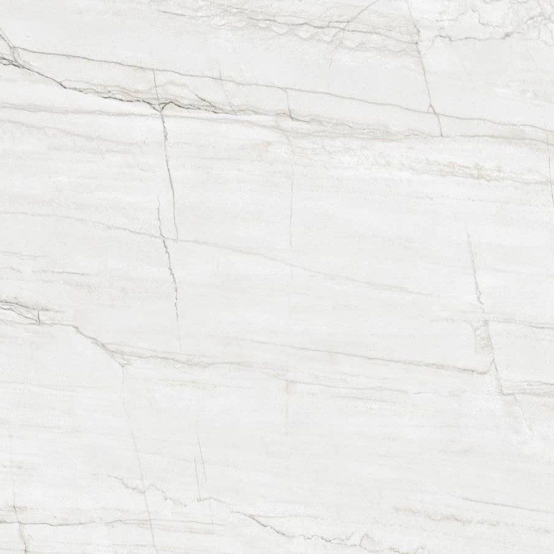
Everest blancLux (poli) · Nat (mat) · Soft (mat)Blanc pur aux veines subtiles.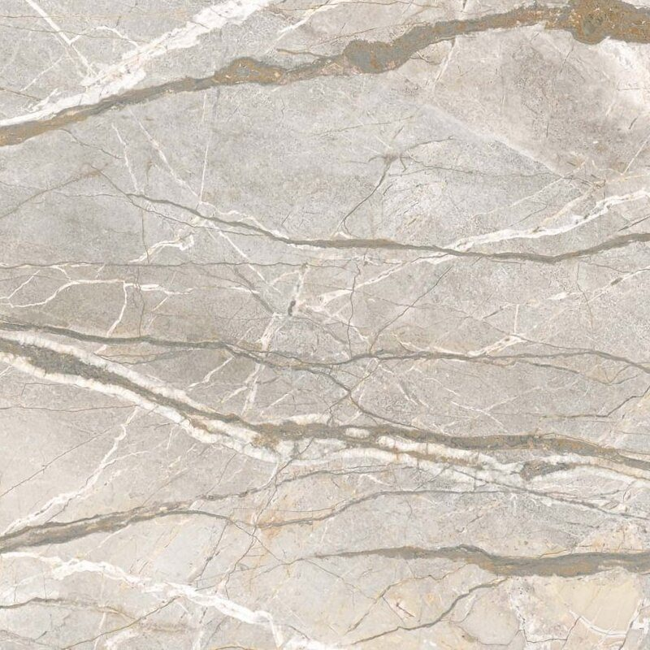
Mandina ExtraLux (poli) · Nat (mat) · Soft (mat)Marbre blanc aux veines grises affirmées.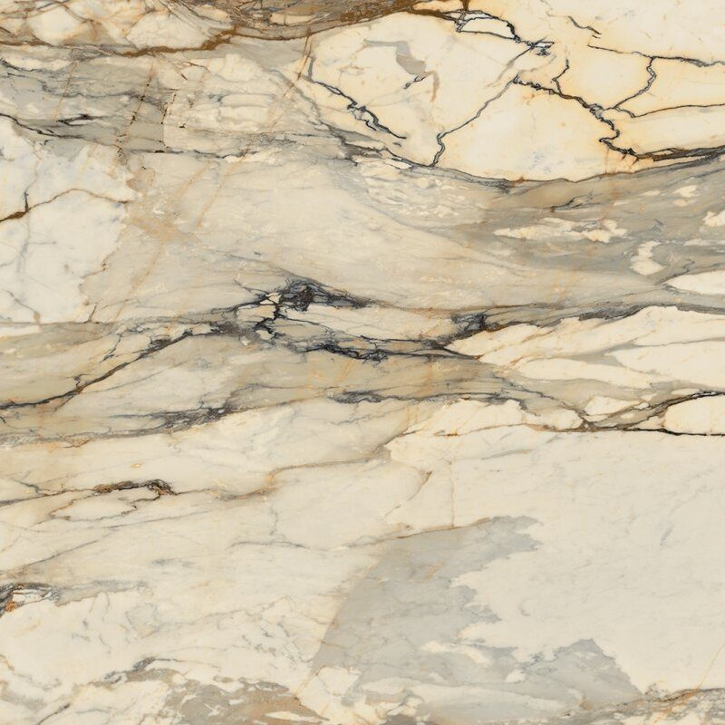
Ombra di PietraLux (poli) · Nat (mat) · Soft (mat)Pierre grise ombrée à l'aspect naturel.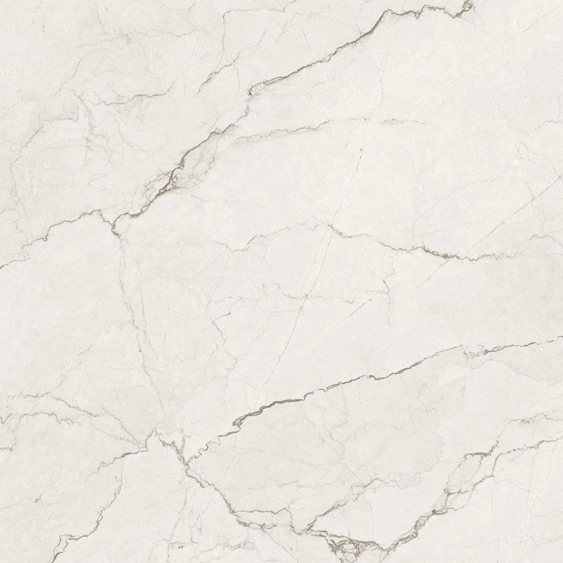
PlaneteLux (poli) · Nat (mat) · Soft (mat)Gris anthracite à l'aspect minéral.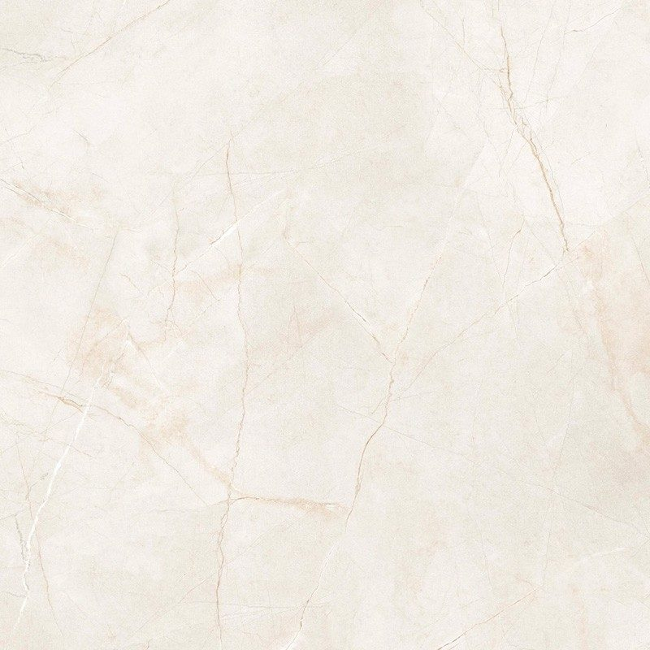
SaharaLux (poli) · Nat (mat) · Soft (mat)Beige chaud inspiré du désert.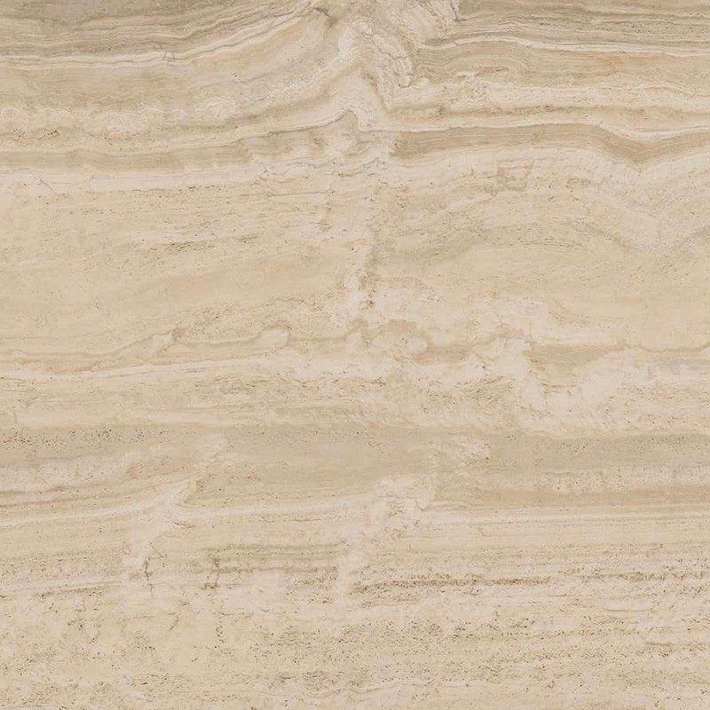
Travertin CrémaLux (poli) · Nat (mat) · Soft (mat)Effet travertin crème au fini naturel.
Ambiances
Céramique MStoneAmbiance cuisine Céramique MStoneAmbiance salle de bain


Pourquoi choisir la céramique MStone pour votre plan de travail
La céramique MStone coche toutes les cases pratiques : pas de porosité, donc pas de traitement ; bonne tenue à la chaleur, aux rayures et aux produits chimiques ; couleur stable même exposée aux UV. Sa certification pour le contact alimentaire rassure ceux qui préparent pâtes et pâtisseries directement sur le plan.
Son originalité tient à ses quatre finitions. Lux est un poli lumineux, Nat un mat naturel, Soft un mat doux au toucher, et Soft 3D un mat texturé qui donne du relief aux effets pierre. Un même décor change ainsi de caractère selon la pièce.
Avec deux épaisseurs, 12 et 20 mm, elle suit votre projet du plan de travail au plan vasque, le 12 mm étant particulièrement adapté aux revêtements muraux.
Bien choisir son coloris de céramique MStone
Les 13 décors MStone se répartissent entre effets marbre, pierres douces et teintes affirmées.
- Pour un marbre lumineux : Calacatta Gold aux veines dorées, ou Calacatta Cendre aux veines gris cendré, plus sobre.
- Pour une ambiance naturelle et chaleureuse : Travertin Créma, Créma Natural ou Sahara, qui s'accordent avec le bois et la pierre.
- Pour du caractère : Cosmos, gris foncé moucheté, Ombra di Pietra, ou Emeraude Green pour une touche de couleur rare.
- Pour une touche précieuse : Antique Oro et son effet or vieilli.
En salle de bains, la finition Soft ou Nat évite l'effet miroir et apporte une sensation plus apaisante. En cuisine, Lux révèle au mieux la profondeur des veinages.
Vos questions
Qu'est-ce que la finition Soft 3D de la céramique MStone ?
Soft 3D est une finition mate texturée : la surface présente un léger relief qui accompagne le décor, comme le ferait une pierre naturelle brossée. Elle donne un rendu très authentique aux effets pierre et limite les reflets. Elle demande simplement un nettoyage à l'éponge douce pour atteindre les micro-reliefs. Elle n'est pas proposée sur tous les coloris : le catalogue ci-dessous l'indique.
Peut-on pétrir et rouler une pâte directement sur la céramique MStone ?
Oui. La céramique MStone est certifiée pour le contact alimentaire et sa surface non poreuse ne retient ni farine, ni graisse, ni bactéries dans des pores. Nettoyez le plan avant et après usage à l'eau savonneuse. Pour la découpe, gardez une planche : la surface ne craint pas grand-chose, mais une céramique aussi dure émousse vite le tranchant des couteaux.
Parlons de votre projet
Un expert étudie votre demande et vous répond sous 48 heures ouvrées, avec une proposition sur mesure.